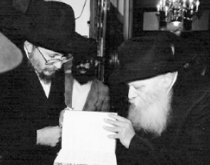

I Won the Raffle!
The trip to New York was long and hard and lasted a week. We were very excited, and on the way we told stories about Chassidim traveling to the Rebbe and learned maamarim about the special quality of Tishrei.
By Rabbi Yekusiel Green, author of many Chassidic works
Prepared for publication by Nosson Avrohom

PREPARING PROPERLY
The first time I had the privilege of being with the Rebbe was in 5723/1963. A raffle for a ticket was held in Tammuz and the people who had bought tickets were very excited. Everyone was hoping to win that raffle.
That year, the yeshiva g’dola of Tomchei T’mimim moved from Lud to Kfar Chabad. The Chassid R’ Folya Kahn knew how to drum up excitement about a trip to the Rebbe and draw in many people, but in those tough times they only managed to raise the cost of half of a round-trip ticket from among the participants. 1000 liros were enough for a one-way ticket and the winner would have to pay the rest.
I was told I had won and I can’t begin to describe how thrilled I was. Unlike today, flying overseas was a major event. There were no direct flights from Eretz Yisroel to the United States at the time. My grandfather a”h had left me a bank account that he had opened for me with a large sum of money for the future. I withdrew it and collected a little more and was able to pay 2000 liros for the rest of the ticket.
I sent a letter to the Rebbe in which I informed him that I had won the raffle. A few days later, on 8 Tammuz, I received a response – a full page with specific instructions about how to prepare for the trip:
In response to your letter of Rosh Chodesh Tammuz, the month of Geula, in which you write that you won the raffle to travel here for the upcoming Tishrei …
Surely, you will prepare yourself properly, for your own sake and because you are the shliach of all the participants in the raffle.
The manner of preparing should be discussed with the mashpiim in your area. We are promised, if you toil you will be successful, and the merit of the many helps you.
We are in the month of Geula, the redemption of the Rebbe, my father-in-law, Nasi Yisroel, and the body follows the head.
At an auspicious time the pidyon nefesh in your letter will be read at the gravesite of the Rebbe, my father-in-law.
I consulted with R’ Shlomo Chaim Kesselman, who gave me specific instructions about which maamarim I should learn and how I should prepare for the trip.
I made the trip together with the talmidim of that year’s K’vutza group, who received permission from the IDF to go to the Rebbe, although it was only for three months.
The trip was long and hard and lasted a week. We were very excited, and on the way we told stories about Chassidim traveling to the Rebbe and learned maamarim about the special quality of Tishrei.
We took a train from Tel Aviv to Haifa on Sunday, where we boarded a ship which took us to Marseilles, France. In France we took an overnight train to Paris. In the morning, we were welcomed by two Chassidim in France who were also members of the European Office, R’ Hillel Azimov and R’ Refael Wilschansky.
On Friday, we boarded a small plane that took us to London, where our group stayed with different Lubavitchers who were happy to host guests of the Rebbe. I stayed with the Vogels. In London, we also enjoyed a warm welcome and were showered with lots of love. R’ Bentzion Shagalov, who ran a store that sold coats and sweaters, outfitted every bachur with a warm coat. That was the atmosphere back then …
On Sunday, we took a direct flight from London to New York.
The first time we saw the Rebbe was on Monday, when the Rebbe came in for Krias Ha’Torah in the small zal. It is hard to convey in words the experience I had in Crown Heights. The Rebbe davened upstairs for all the t’fillos of Mincha and Maariv and we stood relatively close to him. In general, in those days the tone was more close and intimate.
The Rebbe davened in the big zal only on Shabbos. We were not allowed to participate, since we had instructions from the Rebbe to keep the yeshiva’s s’darim. We had to learn Chassidus between Mincha and Maariv with the other talmidim of the yeshiva, a practice I stick to till this very day.
AT THE KING’S TABLE
As the winner of the raffle, I had a number of wonderful privileges. On Rosh HaShana during the t’kios, I was able to stand on the bima where only a few senior Chassidim stood, even though I was a merely a young bachur, all of 20 years old. Those were unforgettable moments. The panim were lying there in front of the Rebbe. The Rebbe was wrapped in his tallis and he cried for ten long minutes. One could sense how the Rebbe felt for each of the people who had turned to him, and was pleading on behalf of Am Yisroel.
There was a feeling of awe and trepidation. Until today, every year during the t’kios, I recall those moments saturated with resplendence and feel pain in my heart from those tears of the Rebbe.
During the hakafos I walked with the Rebbe for the first and seventh hakafa. Another extraordinary kiruv I enjoyed on Simchas Torah was when the Rebbe’s secretary, R’ Moshe Leib Rodstein, came over to me and invited me to eat the Yom Tov meal with the Rebbe in the Rebbe Rayatz’s home. Only ten people of the distinguished Chassidim were invited, and there I was with them. At the head of the table was an empty chair for the Rebbe Rayatz. The Rebbe sat on the left of the table and Rashag, who was older than the Rebbe, sat on the right.
I sat at the end of the table on Rashag’s side. During the meal, Rashag spoke with the Rebbe. R’ Yudel Shmotkin, who sat next to me, kept urging me to eat quickly so as not to delay the Rebbe. The Rebbe would extend the eating time on purpose, so as not to inconvenience guests who were still eating. The Rebbe would not begin eating until every person had been served and the waiter had sat down.
I remember that these practices of the Rebbe astonished and moved me. They made such an impression on me that I decided to adopt them. There are times that you see a woman serving and before she is done, people have already finished eating their portion.
At the end of the meal, one of the people in charge came over to me and said, “Yekusiel, the Rebbe wants you to lead the bentching.” I nearly fainted. He explained how to say the zimun in the Rebbe’s presence.
What can I say … to sit in the Rebbe’s presence and to say, “B’r’shus Adoneinu Moreinu v’Rabbeinu” is an unforgettable experience.
MY YECHIDUS
After a Tishrei packed with these special experiences, all the talmidim of the K’vutza prepared for yechidus. We were able to go in, one after another, for a private yechidus in the middle of Cheshvan.
A few days before I had yechidus, I received a letter from R’ Dovid Kretz, and before I tell you about my yechidus with the Rebbe, I must tell you about this letter.
About a year before this trip, another three bachurim (Yeshaya Hertzel, Aryeh Levin, and Dovid Kretz) and I decided to go to Miron to the gravesite of Rabbi Shimon Bar Yochai. We took a train to Haifa and then several buses. We left early in the morning, which is why we did not daven Shacharis in yeshiva. We took our t’fillin along so we could daven on the train. When we finished davening, there was still plenty of time until Haifa, so we went among the passengers and offered t’fillin.
In one car there were fifteen or so guys from Kibbutz Ein Dor in the Jezreel Valley and we asked them to put on t’fillin. They were young in spirit, and unlike the more polite folks who merely agreed or didn’t, they asked us questions, such as why should we do this if we don’t believe?
I patiently explained what we had learned in yeshiva and answered their questions one by one. As the conversation continued, more and more people came from other compartments of the train to watch the Chabad boys having a dialog with the kibbutznik guys. We were an interesting attraction.
Interestingly, their teacher, Mr. Gazit, who was the most contrary, was the first to put on t’fillin. After he took them off, he said thank you to me for filling in for him with several lessons on Judaism.
Two weeks later, I received a letter from Danny Ben Arom, representative of the Lehava group, who wrote that following that conversation on the train, they had more questions; he wanted to know whether he could write them and receive answers. Of course I agreed and every few weeks I would get a letter of questions. After consulting with my friends, I would respond.
They would hang the letter with the answers on the bulletin board before the symposium they had once every two weeks, during which they would discuss the answers and raise additional questions.
Now, a few days before having yechidus, Dovid Kretz sent me their letter in which they wrote that they were inviting me to appear at the symposium. When I met with the Rebbe, I submitted their letter. I had already written to the Rebbe in earlier letters about my involvement with them.
The Rebbe’s answer was: [Only] Married men should go to places that are mixed [men and women] and not yeshiva bachurim and bachurim.
I learned that even Hafatzas Ha’maayanos has limits in order to protect one’s Yiras Shamayim. You can’t do everything.
A LOOK AND ITS SIGNIFICANCE
I will end with something I experienced in Tishrei 5732/1972. As they sang one of the niggunim, I was standing on a bench facing the Rebbe. R’ Levi Yitzchok Bruk stood next to me. At a certain point, he took my hand and said, “Yekusiel, it’s already quite a few seconds that the Rebbe stopped clapping and is staring at you. What did you do to deserve this?”
I blushed. I looked up and saw the Rebbe gazing at me while all of 770 danced and rejoiced. As to the significance of this, that is something personal …
Nosson Avrohom. "I Won the Raffle!." Beis Moshiach, no. 850 (September 14, 2012).